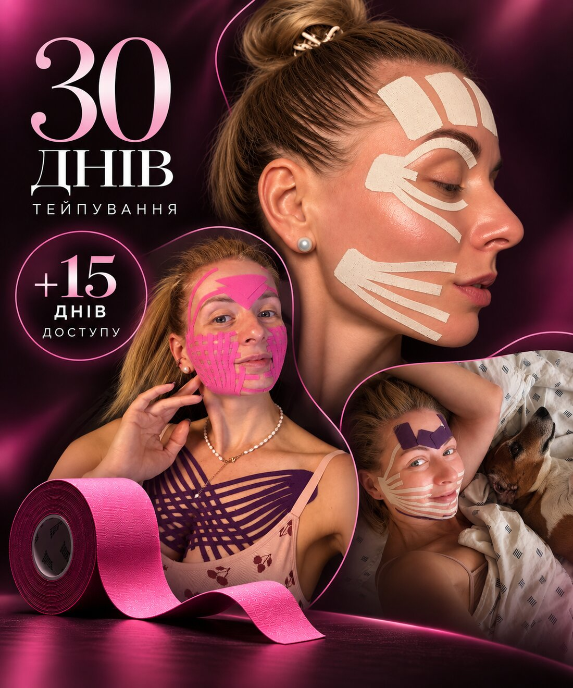
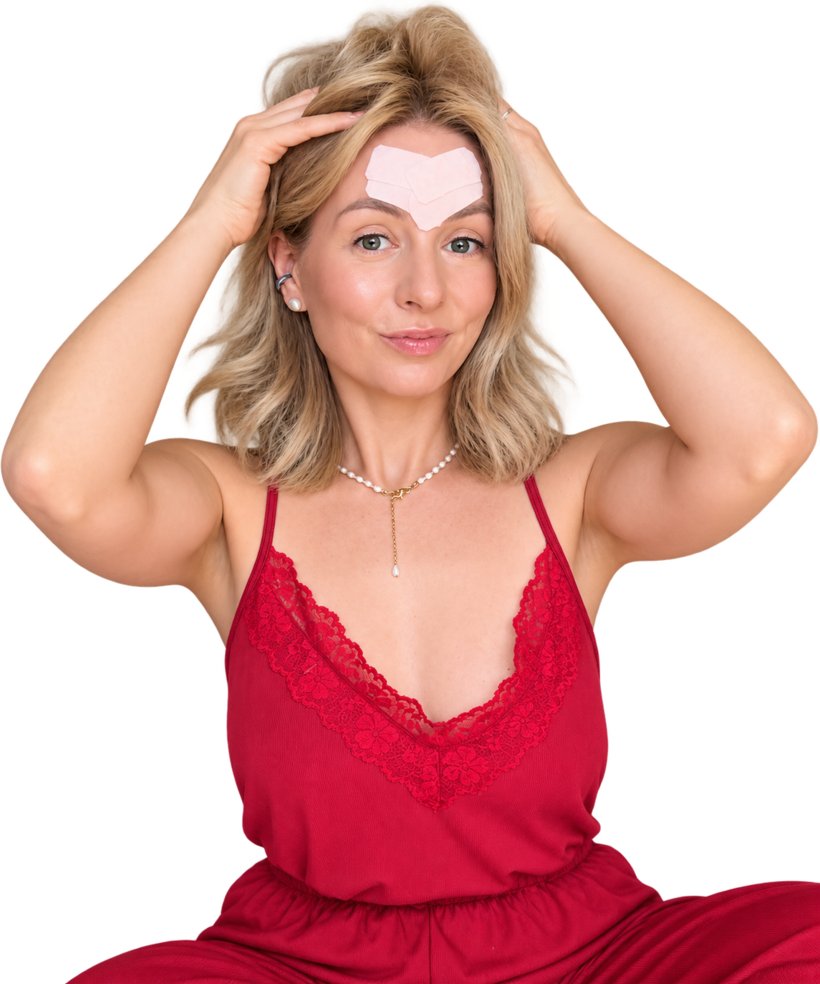
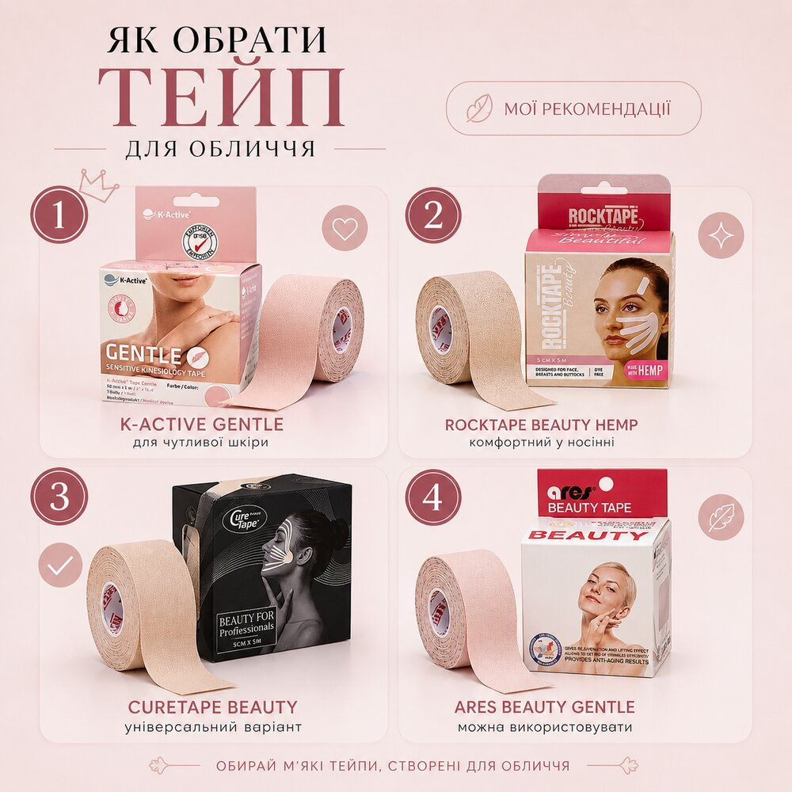

Вечірні онлайн-зустрічі о 21:00
Виконуємо практику разом зі мною. Якщо не можете бути онлайн — усі ефіри будуть у запису.
Старт 20 вересня
30 днів разом, щоб навчитися працювати з обличчям не хаотично, а комплексно — від дренажу та розслаблення до ліфтингових технік.

Про мене
Я створила цей клуб для жінок, які хочуть піклуватися про себе, своє обличчя та тіло системно, але без складних процедур і багатогодинних ритуалів.
Ви можете знати десятки схем. Але чи знаєте, як їх поєднувати?
Я веду вас протягом 30 днів — показую, пояснюю, допомагаю і перевіряю.
Я створила цей простір, щоб показати тейпування як систему — від дренажу та розслаблення до комплексної роботи з обличчям і тілом.

Для кого
Формат
30 днів ми працюємо разом. Неділя — вихідний.
Виконуємо практику разом зі мною. Якщо не можете бути онлайн — усі ефіри будуть у запису.
Від дренажних і розслаблюючих до ліфтингових.
Будемо додавати тейпування на тіло: шия, грудний відділ, живіт, стегна та інші зони.
Готуємо тканини та знімаємо зайве напруження.
Денне тейпування та окремі практики я надсилатиму у форматі відео.
Ви зможете надсилати фото та відео, а я даватиму рекомендації.
Усі зустрічі, записи, інструкції та спілкування — в одному просторі. Підтримка 24/7.
Для учасниць клубу діють спеціальні умови на замовлення тейпів у дистриб’ютора.
Підготовка
Також рекомендую мати тейп для тіла шириною 5 см: протягом місяця ми будемо працювати не лише з обличчям.

Відгуки
Живі враження тих, хто вже пройшов цей шлях.
Важливо
Тейпування — це про дбайливу роботу з собою. Тому не варто поспішати, якщо зараз шкіра або організм потребують відновлення.
Якщо ви маєте захворювання, проходите лікування або не впевнені, чи можна вам використовувати тейпи, краще попередньо проконсультуватися зі своїм лікарем. А перед першим використанням нового тейпа ми обов’язково робимо алергопробу.
Якщо зараз не ваш час — нічого страшного. Краще трохи зачекати й почати тоді, коли шкіра буде готова до нашої практики.
Новий потік